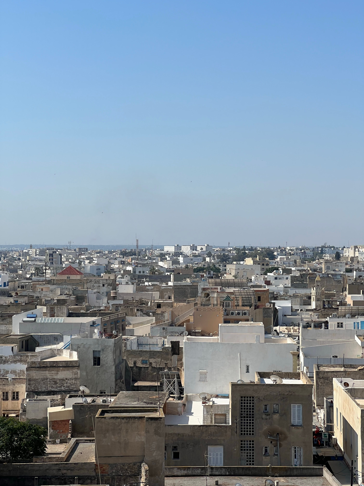

Tunisia Travel Guide —
Tunis, the Sahara Desert & things to do
Our Tunisia trip combined Tunis, Mediterranean beach time and the Sahara Desert. We wandered the souks in the evening, enjoyed the coast and then headed south through El Jem and Douz for the part we still remember most clearly: an overnight desert trip with camel rides at sunset and sunrise. This guide has our story, a map of where we went and the practical facts you'll want before you book.
Population from Tunisia's 2024 census (National Institute of Statistics). Entry, currency and emergency details from the Irish Department of Foreign Affairs, checked September 2026. Rules change, so check before you travel.
Our Tunisia route
From the coast and the souks of Tunis, south to the Roman amphitheatre at El Jem and Douz, and on into the Sahara for our overnight camel trip. Tap a marker to open the guide for that stop.
Loading the map…
- 1Tunis
Beach days on the coast and the souks of Tunis, our first taste of Tunisia.
Read our Tunis guide → - 2
- 3Douz & the Sahara
The gateway to the desert, then our overnight camel trip under the stars.
Read our Sahara guide →
Between El Jem and Douz we travelled by 4x4 through drier, rockier landscape and stopped for tea in a traditional troglodyte home.

Tunis & the coast
Mediterranean beach days and swimming, then the colour and bustle of the souks of Tunis. Plus ideas for the medina, Carthage and Sidi Bou Said today.
Read our Tunis guide →
Southern Tunisia & the Sahara
The Roman amphitheatre at El Jem, the road south by 4x4, tea in a troglodyte home, Douz, and an overnight in the Sahara with camels at sunset and sunrise.
Read our Sahara guide →Beach days, ancient souks and a night under the Sahara stars.
We arrived in Tunisia in 2009 and immediately understood why it has been drawing visitors from across the Mediterranean for centuries. Our base right by the beach in Tunis gave us the perfect combination — sea, sun and sand during the day, and then in the evenings the ancient city came alive in a completely different way.
The souks of Tunis are extraordinary — a UNESCO-listed medina of winding covered streets filled with the scents of spice, the colours of ceramics and textiles, the sound of craftsmen at work and the warmth of traders keen to share their city with you. Exploring them in the cool of the evening, with the heat of the day fading and the lights coming on in the narrow alleys, was one of those simple travel pleasures that stays with you.
But the absolute centrepiece of the whole trip was the overnight Sahara Desert excursion. We left the coast behind on an organised trip south — the Roman amphitheatre at El Jem, then drier and more dramatic landscape by 4x4, tea in a traditional troglodyte home, and on through Douz, the gateway to the desert. At the edge of the dunes we mounted camels and rode into the Sahara as the sun began its descent. The colours that came — the golds, the oranges, the deep reds against the enormous sky — were breathtaking. We made camp in the desert, had dinner under a canopy of stars so bright and dense it barely seemed real, and fell asleep to the complete and total silence of the Sahara.
The sunrise ride the following morning was if anything even more beautiful. The desert at dawn has a coolness and a stillness that feels almost sacred. Riding out on camelback as the light crept across the dunes and the world slowly warmed back to life — it is one of the great travel memories of our lives.
Tunisia is affordable, welcoming, beautiful and genuinely surprising. The people we met were among the friendliest we have encountered anywhere in North Africa. It is a country that deserves far more attention than it gets and we would go back in a heartbeat.
The highlights — what Tunisia does best
Riding into the Sahara dunes as the sun goes down is one of those travel experiences that exceeds every expectation. The colours, the silence, the scale of the desert — it is simply magnificent and unlike anything else we have done.
More on the Sahara →Sleeping in the desert under a sky so full of stars it barely seems real is one of the most humbling and beautiful experiences travel can give you. No phone signal, no noise — just the desert and the night sky above you.
More on the Sahara →Waking before dawn and riding out on camelback as the Sahara comes back to life at sunrise — cool, still and impossibly beautiful. If anything even more breathtaking than the sunset the evening before.
More on the Sahara →The scale of it took us by surprise. Standing inside a structure that has lasted for centuries marked the shift from the coast to the south.
More on southern Tunisia →We still remember sitting down for tea in a traditional underground home: cool after the afternoon heat, and warm with hospitality.
More on southern Tunisia →The medina of Tunis at night — narrow lit alleys, the scent of spice and mint tea, ceramics and textiles at every turn, and the warmth of a city that knows how to welcome its visitors. A perfect evening every time.
More on Tunis →Staying right on the Mediterranean gave us beautiful beach days to balance the desert adventures — warm clear water, good food and the easy relaxed pace of a Tunisian seaside holiday at its best.
More on Tunis →Tunisia was one of the best-value destinations we've visited in the Mediterranean and North Africa — excellent food, good accommodation and memorable experiences at prices that made it accessible on any budget. That was in 2009, so check current prices.
Our trip was in 2009, and things have changed. The details below come from the Irish Department of Foreign Affairs travel advice for Tunisia (checked September 2026). Read the latest version before you book, because advice can change quickly.
🛂 Entry and passports
- Irish citizens don't need a visa for Tunisia.
- Your passport needs at least 6 months' validity from the date you enter.
- A passport card isn't accepted. You could be held at the airport until a flight home.
- Carry a photocopy of your passport, and keep the original somewhere safe unless you need it.
🛡️ Safety
- The DFA rating is High Degree of Caution (level 2 of 4). A state of emergency has been in place since 2015, and the risk of terrorism remains high.
- Take extra care in crowded places and transport hubs, and avoid demonstrations. They often happen on Friday afternoons in city centres.
- The DFA advises against all travel to the Chaambi Mountain National Park area, anywhere within 30 km of the Algerian and Libyan borders, the Ben Guerdane area, and the militarised zone in the far south of Tataouine Governorate.
- Desert areas near the Algerian border need permission from the authorities. If you head south, use a reputable tour operator or licensed local guide.
💶 Money
- The currency is the Tunisian dinar (TND). It is illegal to bring dinars in or take them out.
- Declare foreign currency worth more than 5,000 dinars when you arrive, and keep your exchange receipts. You may be asked for them when you leave.
- Pickpockets work the crowded markets. Don't carry your cards, cash and travel tickets together, and avoid ATMs after dark.
🩺 Health and water
- Ask your doctor about vaccinations at least 8 weeks before you travel.
- Get comprehensive travel insurance that covers everything you plan to do, including desert excursions.
- Stick to boiled or bottled water.
🕌 Culture and local laws
- Tunisia is a Muslim country. Coastal resorts are relaxed, but dress modestly in cities, at religious sites and in rural areas.
- During Ramadan, avoid eating, drinking or smoking in public in daylight hours.
- Sex outside marriage and homosexuality are criminal offences, so the DFA advises discretion at all times.
🆘 If something goes wrong
- Emergency numbers: police 197 or 193, fire 198, ambulance 190.
- There's no Irish embassy in Tunisia. The Irish Embassy in Rabat (Morocco) helps Irish citizens, and there is an Honorary Consul in Tunis. Contact details are on the DFA page.
- Register your trip with the DFA so they can reach you in a crisis.
The Sahara Desert — our own photos from 2009
From the desert landscape and the camel trains to the extraordinary Sahara sunset — Tunisia through our lens.
.jpg)
.jpg)
.jpg)

Book a Tunisia tour through TourRadar
Want to experience the very best of Tunisia — the Sahara Desert, the ancient medinas, the Mediterranean coast and the Roman ruins — with everything organised for you? TourRadar has brilliant tours covering this remarkable country.
Tunisia rewards exploration beyond the resort — the Sahara Desert excursion is extraordinary, the ancient ruins of Carthage and El Djem are world-class, and the medinas of Tunis, Sousse and Sfax are among the finest in North Africa. A guided tour is a brilliant way to see more of it without the hassle of figuring out logistics in a country where the rewards are greatest when you go off the beaten track.
Disclosure: This is an affiliate link. If you book through it we may earn a small commission at no extra cost to you.
Book Tunisia experiences with GetYourGuide
From Sahara Desert overnight trips and camel rides to Tunis medina tours, Carthage ruins visits and Mediterranean day trips — browse Tunisia activities here:
Disclosure: If you book through these links we may earn a small commission at no extra cost to you.
Is Tunisia worth visiting?
Absolutely — Tunisia is one of the most accessible and rewarding North African destinations. Beautiful Mediterranean beaches, fascinating ancient history, vibrant souks, incredible food and the extraordinary Sahara Desert all within easy reach. It is brilliant value and the people are genuinely warm and welcoming.
Do Irish citizens need a visa for Tunisia?
No. Irish citizens don't need a visa to enter Tunisia. You do need a valid Irish passport with at least 6 months' validity from the date you enter. A passport card isn't accepted, and you could be held at the airport until a flight home if you arrive with one. (Source: Irish Department of Foreign Affairs, checked September 2026.)
What currency is used in Tunisia?
The Tunisian dinar (TND). It is illegal to bring dinars into Tunisia or take them out, so you can only get them once you arrive. You must declare foreign currency worth more than 5,000 dinars when you arrive, and you may be asked for your currency declaration and exchange receipts when you leave, so keep them.
What is the population of Tunisia?
About 12 million people — the 2024 census counted 11,972,169. Around 1.1 million of them live in the Tunis governorate.
What language do they speak in Tunisia?
Arabic is the official language, and French is also widely spoken.
What is a Sahara Desert trip from Tunisia like?
An overnight Sahara Desert trip from Tunisia is one of the most magical travel experiences you can have. Riding a camel into the dunes at sunset, watching the colours shift across the sky, sleeping under a blanket of stars and then waking for a sunrise camel ride as the desert comes back to life — it is genuinely unlike anything else.
What are the souks in Tunisia like?
The souks of Tunis — particularly the Medina of Tunis, a UNESCO World Heritage Site — are a labyrinthine maze of covered streets filled with spices, ceramics, leather, textiles, jewellery and the sounds and smells of daily Tunisian life. They are best explored in the cool of the evening and are an absolute must.
Is Tunisia good value for money?
Yes — Tunisia is excellent value compared to most Mediterranean and North African destinations. Food, accommodation, activities and souvenirs are all very reasonably priced, which makes it a brilliant choice for a holiday that delivers a huge amount without breaking the bank. That is from our 2009 trip, so check current prices before you plan your budget.
Is Tunisia safe to visit?
Tunisia welcomes a lot of visitors and our own trip was warm and friendly, but it isn't risk-free. The Irish Department of Foreign Affairs currently rates Tunisia ‘High Degree of Caution’ (level 2 of 4), says the risk of terrorist attacks remains high, and advises against all travel to some areas, including within 30 km of the Algerian and Libyan borders, the Ben Guerdane area, Chaambi Mountain National Park and the militarised zone in the far south of Tataouine Governorate. If you are heading into the desert, go with a reputable operator or a licensed local guide, and read the DFA's current advice before you book. Our trip was in 2009, so please treat our story as a memory, not as current safety advice.
What is the best time to visit Tunisia?
Spring (March to May) and autumn (September to November) are ideal for most of Tunisia — warm and sunny without the peak summer heat. If you are planning a Sahara Desert trip, spring and autumn are particularly pleasant. Summer beach holidays work well on the coast but the desert can be extremely hot.
Tunisia packing essentials — what we'd bring
Tunisia is warm and sunny — lightweight clothing, strong sun protection and insect repellent are the essentials. For the Sahara overnight trip, bring a warm layer for the desert night which can be surprisingly cool, and wear covered shoes and long trousers for the camel ride.
Handy for maps and navigation around Tunis and on the journey to the Sahara — keeps you connected without expensive roaming charges.
Tunisia uses Type C and E plugs — a universal travel adaptor is essential. Don't arrive after a long flight with nothing to charge your devices.
The Sahara sunset and camel rides are unmissable photo opportunities — keep a power bank charged so your phone never dies at the most spectacular moments.
Ideal for the Sahara trip and souk wandering — carry water, sun cream, a warm layer for desert nights and camera without weighing yourself down.
Staying hydrated in the Tunisian heat is essential — particularly on the Sahara trip where the daytime temperatures can be very high. Drink more than you think you need to.
Always worth having — for any minor scrapes, blisters from souk walking and anything that comes up on an adventurous trip including an overnight desert stay.
Useful for desert evenings and the Tunis coastal areas — mosquitoes can be active at dusk. A good repellent makes the overnight Sahara experience much more comfortable.
The North African sun is fierce — particularly in the open Sahara Desert where there is no shade. A high SPF is absolutely non-negotiable for the desert trip and beach days alike.
Essential for the Sahara — you will be in full desert sun for hours. A wide-brimmed hat is one of the most important things you can pack for a Tunisia trip with a desert excursion.
Lightweight, breathable and respectful for visits to the medina and mosques — also perfect for the camel ride where covered legs are far more comfortable in the saddle.
Disclosure: These are Amazon affiliate links. If you buy through them we may earn a small commission at no extra cost to you. These are all things we'd genuinely pack for a trip to Tunisia.
Planning your own Tunisia trip?
Book the Sahara overnight trip. Get on a camel at sunset. Watch the stars come out over the dunes. Wake up at dawn and ride back out as the desert warms to life. Tunisia gave us moments we will never forget.
Affiliate disclosure: if you book through our links we may earn a small commission at no cost to you. We only recommend trips and experiences we'd be happy to stand over.